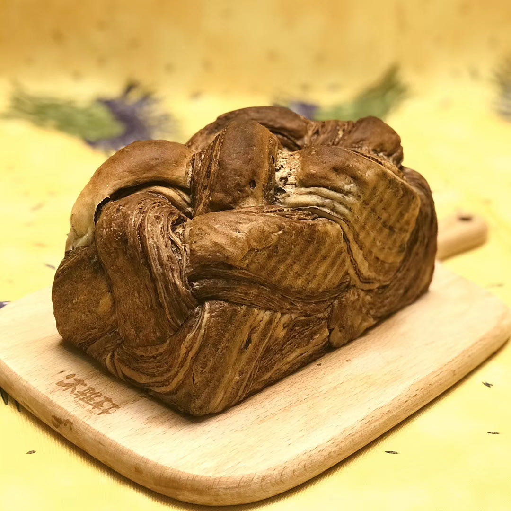
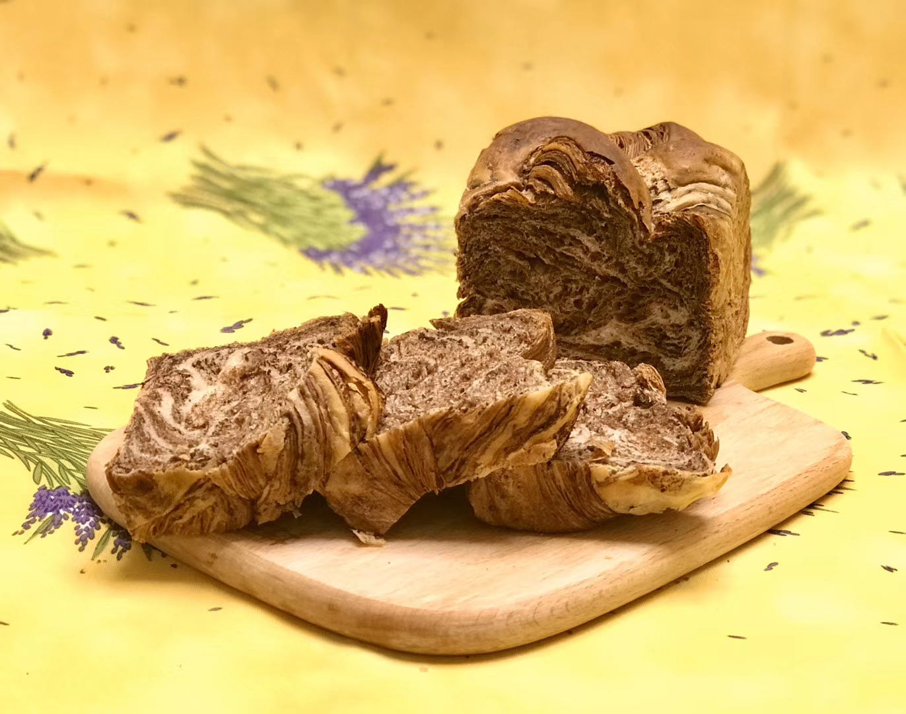
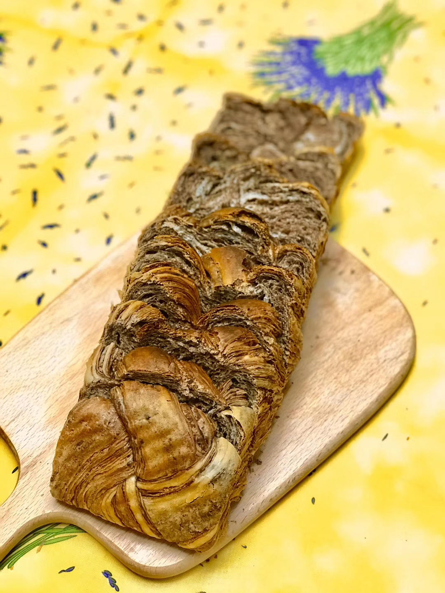

美味升级
这款巧克力面包风味非常醇厚，为了保证做出来的面包达到预期效果，建议大家尽量选用高品质的可可粉和黑巧克力。
巧克力面包颜色很深，烤的时候颜色变化不明显，无法从面包的上色情况来判断面包是否烤好。所以烤的时候一定要留心，首先不能烤过头（面包表面变成深黑色），其次，当烤面包的香味飘出，面包表面成为深棕色，按上去感觉硬硬的，就表示烤好了。
夹心材料里的巧克力和黄油溶化成液态以后，待温度降低会重新凝固，不过，如果完全凝固的话，可能会太硬，不太方便涂抹，所以可以在还没有完全凝固，比较柔软的时候就涂抹在面团上。如果已经太硬，可以再稍稍加热，让它变软一些。
返回首页